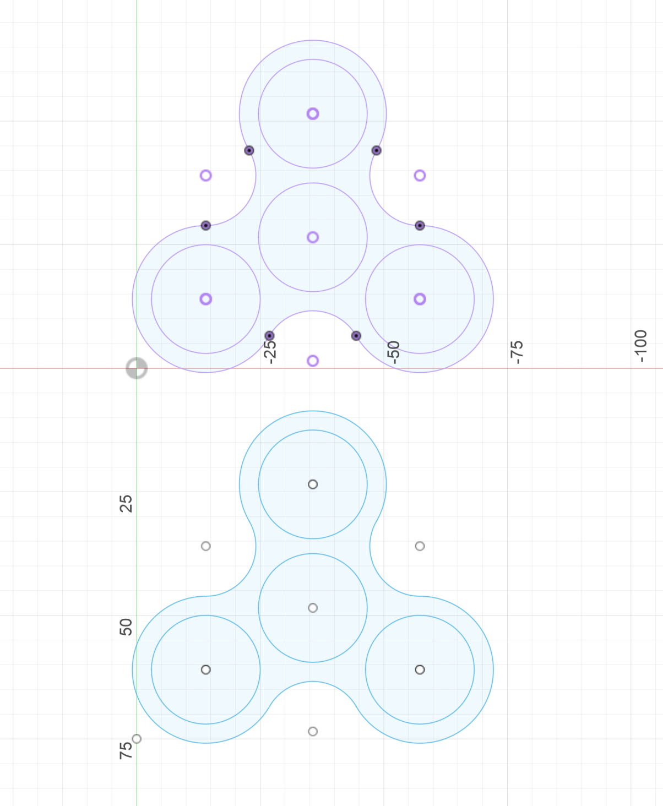
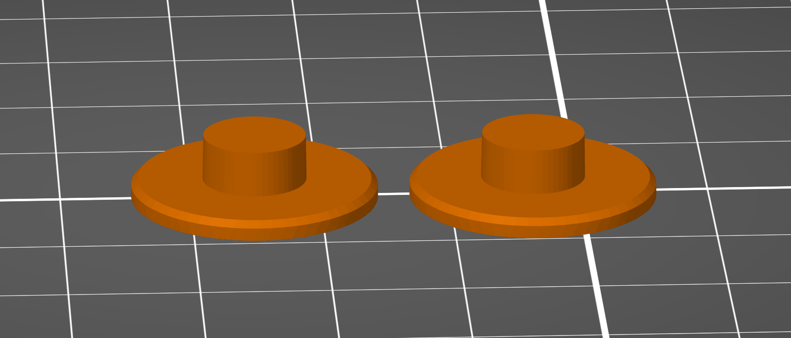
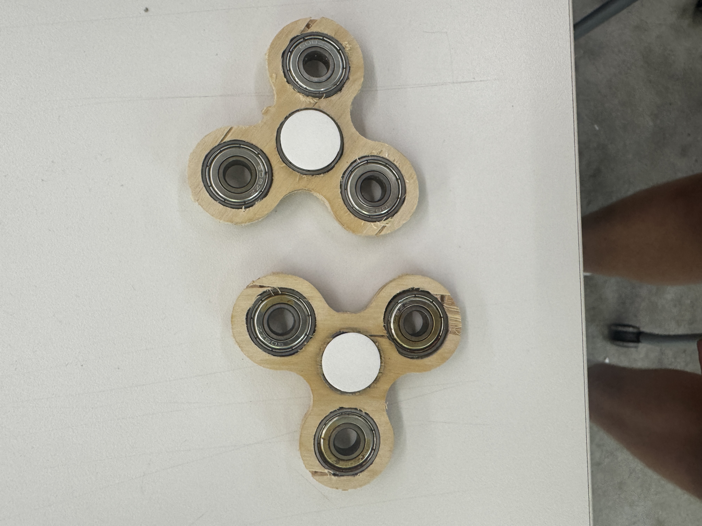
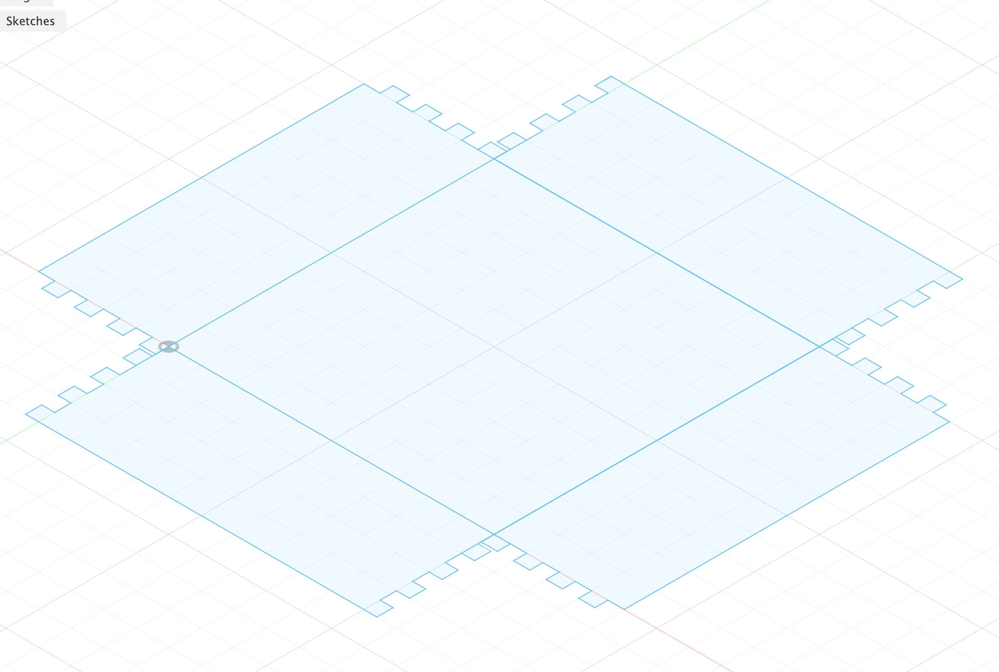
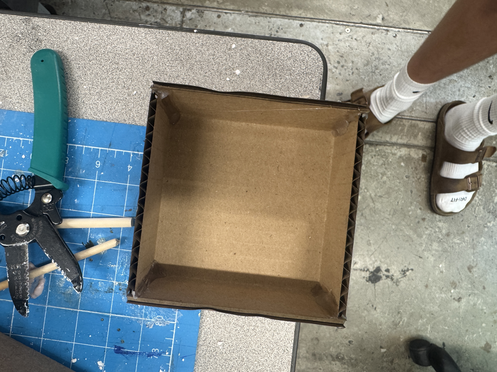
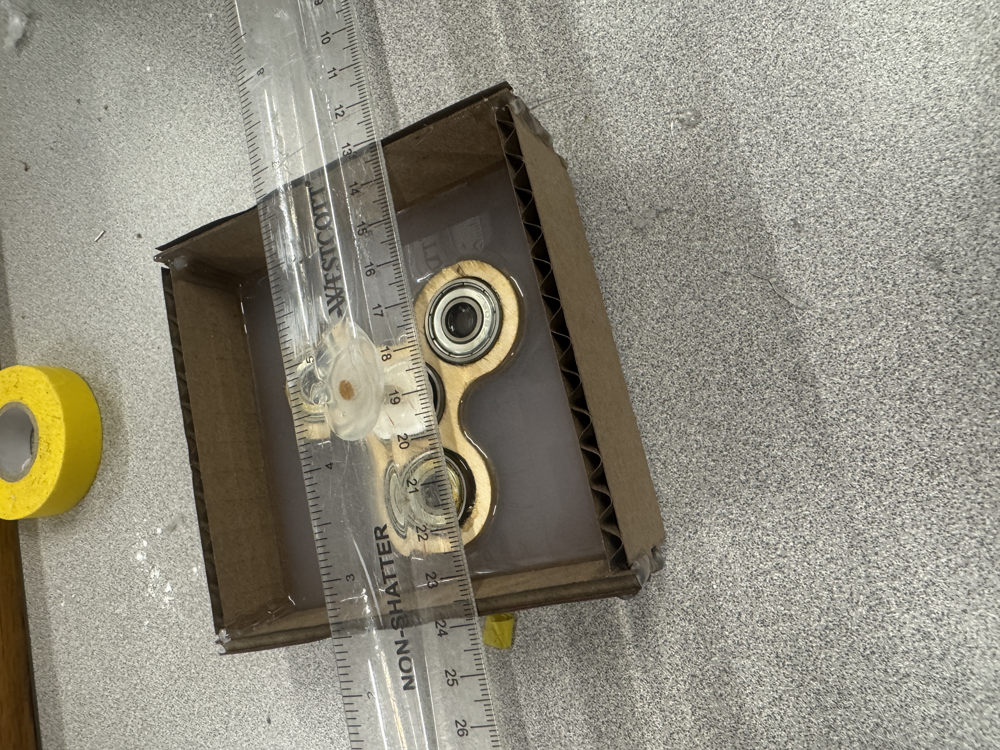
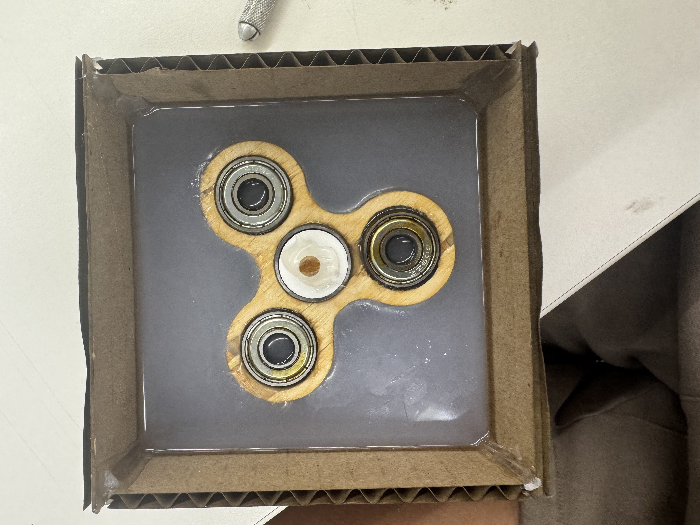
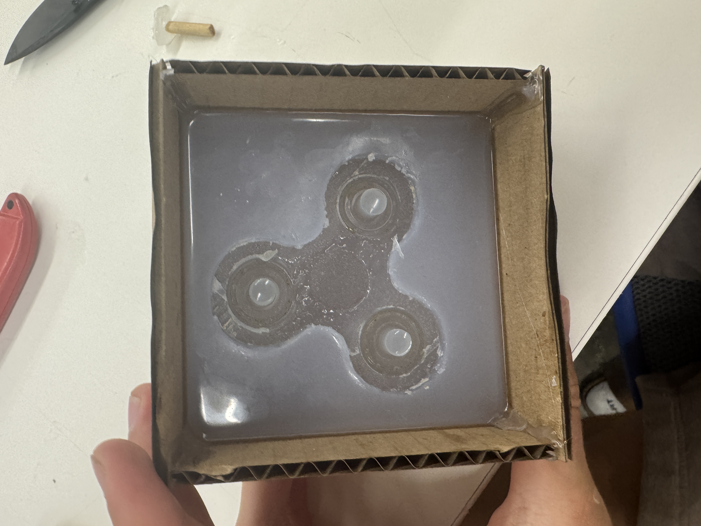
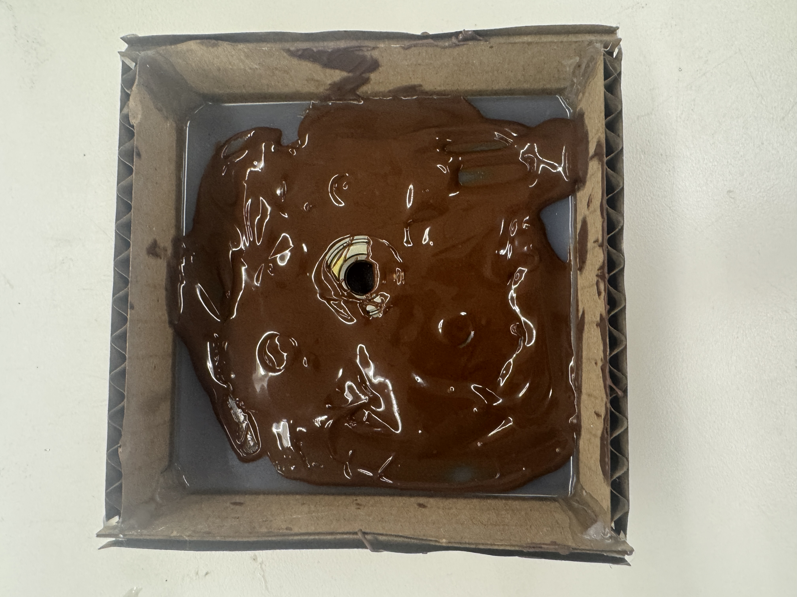
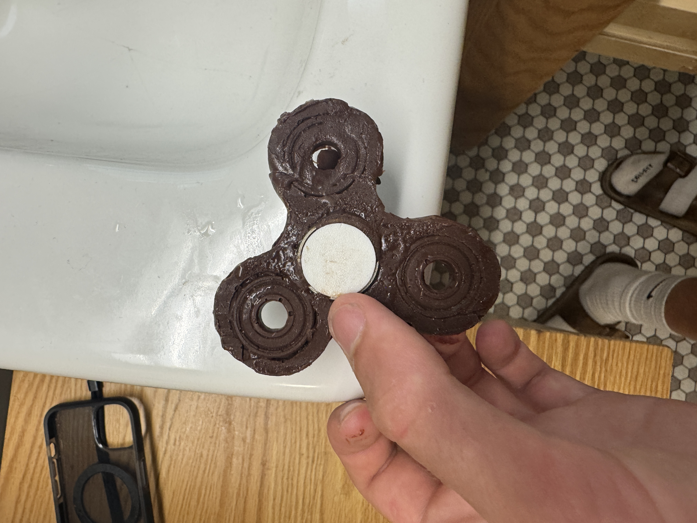

<div class="textcontainer">
<h3>Week 8: CNC Milling</h3>
<h4>Assignment: Make Something With CNC</h4>
<p>I worked with Kamron this week. We decided to CNC a fidget spinner out of wood and turn it into a mold for chocolate casting. Here's how it went:</p>
<h5>Step 1: Found and edited a 3D model</h5>
<p>Grabbed a spinner model online and cleaned it up in Fusion. I tweaked the design to get tight tolerances and made it suitable for a 2D CNC toolpath.</p>

<h5>Step 2: CNC milled the wood body</h5>
<p>Used the ShopBot to cut it out of wood. Some edges were a little tight, and one cracked when inserting the bearings, but it still worked well.</p>
<img src="./cnc.gif" width="400" class="img-fluid mb-4">
<h5>Step 3: Pressed in bearings and added thumb grips</h5>
<p>Pressed in the bearings and added 3D printed thumb grips to make it easier to spin. These made it feel more polished.</p>


<img src="./fidget.gif" width="400" class="img-fluid mb-4">
<h5>Step 4: Built a mold box and poured silicone</h5>
<p>Laser cut a box out of cardboard to hold the silicone. Used Sorta-Clear 37 Part A + B and suspended the spinner in the mold overnight.</p>



<h5>Step 5: Poured chocolate into the mold</h5>
<p>The next day, we poured melted chocolate into the mold and stuck a bearing in the center. It came out as a fully functional chocolate spinner.</p>



<img src="./usedmold.JPG" width="400" class="img-fluid mb-4">

<img src="./chocospinner.gif" width="400" class="img-fluid mb-4">
<h5>Conclusion:</h5>
<p>The whole thing turned out great. The wood version worked, the mold came out clean, and the chocolate version spun just like the real one. Learned a lot about tolerances and setting up both CNC and mold workflows.</p>
<h5>Bonus: Vacuum Formed LEGO Ice Tray</h5>
<p>As a side experiment, I also used the vacuum former to make a silicone ice tray shaped like a LEGO piece. Came out clean and works surprisingly well.</p>
<img src="./lego.png" width="400" class="img-fluid mb-4">
<h5>Download Files:</h5>
<p><a href="./week8.zip" download>Click here to download all project files (not many files this week)</a></p>
</div>